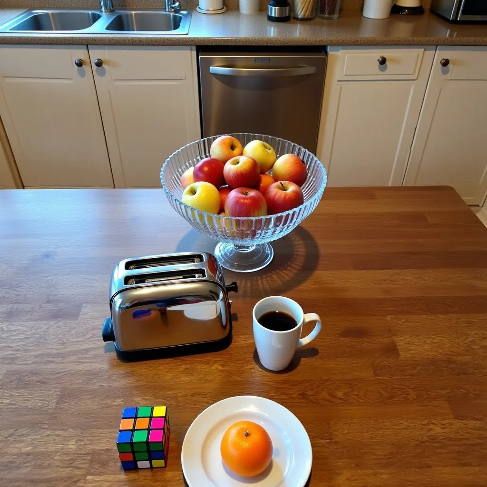
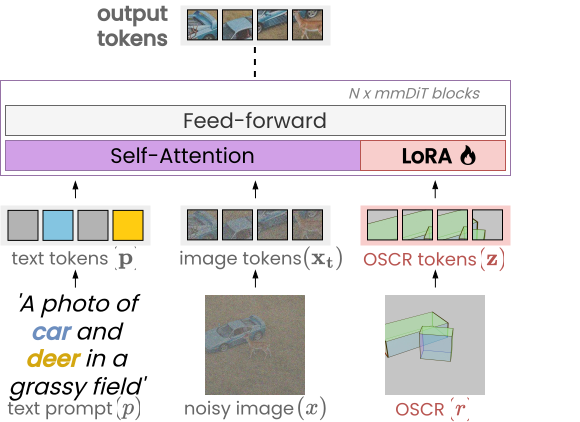
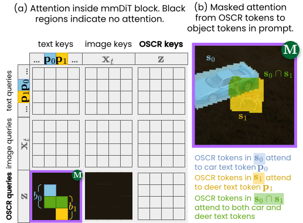

SeeThrough3D: Occlusion Aware 3D Control in Text-to-Image Generation
CVPR 2026 🎉
SeeThrough3D is a simple and effective method for occlusion aware 3D control in image
generation. We propose a compact scene representation which jointy encodes object placement and orientation and camera viewpoint, while also explicitly modeling occlusions. The final scene representation is an image, which is used to condition the generative model for occlusion aware 3D layout control.
We identify occlusion reasoning as a fundamental yet overlooked aspect for 3D layout–conditioned generation.
It is essential for synthesizing partially occluded objects with depth-consistent geometry and scale. While
existing methods can generate realistic scenes that follow input layouts, they often fail to model precise
inter-object occlusions. We propose SeeThrough3D, a model for 3D layout conditioned
generation that explicitly models occlusions. We introduce an occlusion-aware 3D scene representation
(OSCR), where objects
are depicted as translucent 3D boxes placed within a virtual environment and rendered from desired camera
viewpoint. The transparency encodes hidden object regions, enabling the model to reason about occlusions,
while the rendered viewpoint provides explicit camera control during generation. We condition a pretrained
flow based text-to-image image generation model by introducing a set of visual tokens derived from our
rendered 3D representation. Furthermore, we apply masked self-attention to accurately bind each object
bounding box to its corresponding textual description, enabling accurate generation of multiple objects
without object attribute mixing. To train the model, we construct a synthetic dataset with diverse
multi-object scenes with strong inter-object occlusions. SeeThrough3D generalizes effectively to unseen
object categories and enables precise 3D layout control with realistic occlusions and consistent camera
control.
Take control!
Scroll to interact
Scroll to control the bird!

Scroll to interact
Scroll to control the camera!
An occlusion aware 3D scene representation
Existing methods for 3D scene control condition the generative model on depth maps derived from 3D bounding-box scene layouts. These methods succeed in generating simple scenes with few objects and minimal occlusion, but fail to model significant inter-object occlusion in multi-object layouts.
To address this issue, we propose an Occlusion-Aware 3D Scene Representation (OSCR). In OSCR, objects are represented as translucent 3D boxes placed within a virtual environment and rendered from the desired camera viewpoint. The transparency encodes hidden object regions, enabling the model to reason about occlusions, while the rendered viewpoint provides explicit camera control during generation. Further, the box faces are colored to encode orientation. The resulting rendered image is used to condition the generative model, thus providing for a compact yet effective representation for 3D layout control.
Method
The OSCR representation is obtained by rendering the translucent bounding boxes from the desired camera viewpoint in Blender. The rendered OSCR representation is then encoded through the latent autoencoder to obtain OSCR tokens. These OSCR tokens are then introduced into the mmDiT blocks along with image and text tokens, thus conditioning the generation process on 3D layout.
To bind each box in the OSCR representation to its corresponding textual description, we apply masked self-attention to the OSCR tokens. This allows the model to accurately associate each object bounding box with its corresponding text description, enabling accurate generation of multiple objects without attribute mixing.


Qualitative Results
SeeThrough3D generates images that accurately follow the input 3D layout, with realistic occlusions and consistent camera control across diverse object categories.